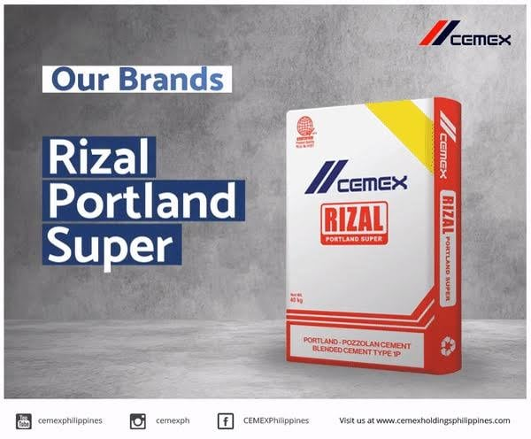

<div class="container mt-5">
  <div class="card">
    <div class="head"style="margin: 20px;">
      <h2>Rate Construction Products</h2>
    </div>
    <div class="row mt-4" style="margin: 20px;">
      <div class="col-md-6">
        
      </div>
      <div class="col-md-6">
        <h3>CEMEX:Rizal Portland Super</h3>
        <p>Apo Cement Corporation (owned by CEMEX) operates as a building material supplier and cement producer. 
          In 1999, CEMEX acquired 99.9% economic interest in APO Cement Corporation. 
          The company has a plant located in Naga, Cebu (founded in 1921) which produces Pozzolan and Portland cement under the APO Cement brand.
          <br><br>
          Headquarters
          APO Cement Plant Compound Tina-an, Naga City Cebu
          Cebu City; Cebu; Postal Code: 6037
          <br><br>
          Contact Details: Purchase the Apo Cement Corporation report to view the information.</p>
        <ngb-rating [(rate)]="currentrate"></ngb-rating>
        <hr>
        <pre>Rate: <b>{{currentrate}}</b> of 10</pre>
      </div>
    </div>
  </div>
</div>

